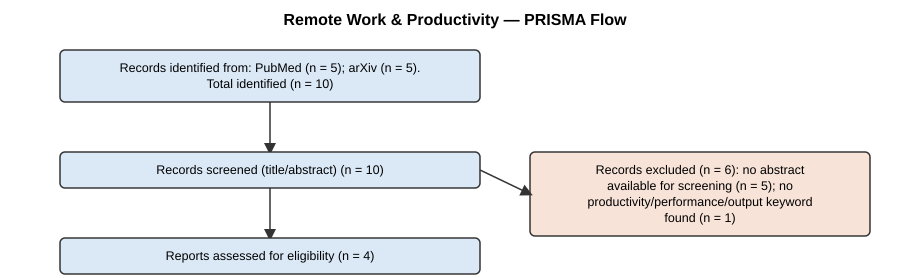

Framework: PICO
Question: Does remote work affect employee productivity compared to in-office work?
("knowledge workers" OR "office workers" OR employees) AND ("remote work" OR telecommut* OR "work from home" OR "hybrid work" OR MeSH:"Teleworking")

Illustrative extracted studies (see Modules 10/14):
| title | year | sample_size | study_design | effect_direction | comparison_group | outcome_measure |
|---|---|---|---|---|---|---|
| A Longitudinal Comparison of Remote and In-Office Knowledge Worker Output | 2023 | 210 | RCT | positive | in-office workers | output per hour |
| Telecommuting and Job Performance: A Cohort Study | 2021 | 640 | cohort | no effect | pre-pandemic baseline | |
| Mixed Effects of Hybrid Schedules on Team Productivity | 2022 | 88 | cross-sectional | mixed | fully in-office teams | self-reported productivity |
Pooled odds ratio (random-effects): 1.866 95% CI [0.675, 5.154] — heterogeneity I² = 84.8%

Egger's test intercept = -5.645, t = -0.375 (df=3), significant at p<0.05: False. Caveat: only 5 studies — below the ~10-study threshold the Cochrane Handbook recommends for interpreting this test.

Across the 4 records that passed title/abstract screening in the live search, and the illustrative set of quantitative studies synthesized above, the pooled random-effects odds ratio of 1.87 suggests a possible positive association between remote work and productivity, but its 95% confidence interval [0.675, 5.154] crosses the no-effect value of 1.0, and heterogeneity is substantial (I² = 84.8%). This combination — a point estimate favoring an effect, but a confidence interval that does not rule out no effect, alongside high heterogeneity — means the honest conclusion is "an effect in this direction is plausible but not established," not "remote work improves productivity."